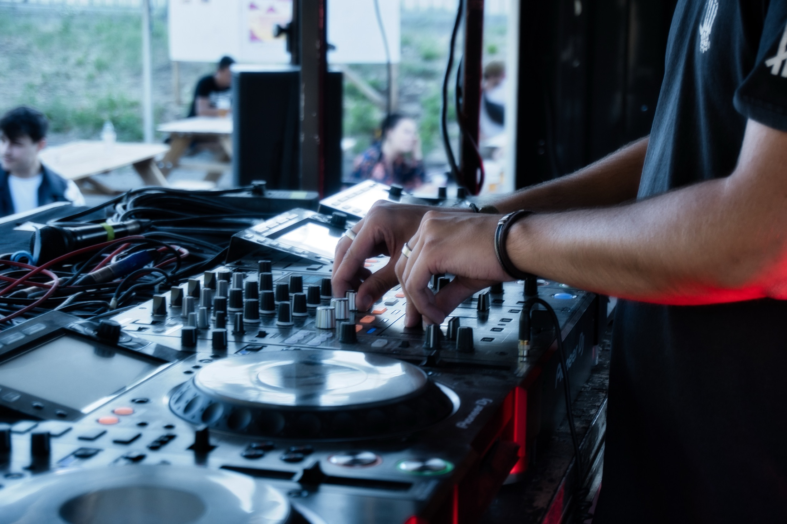
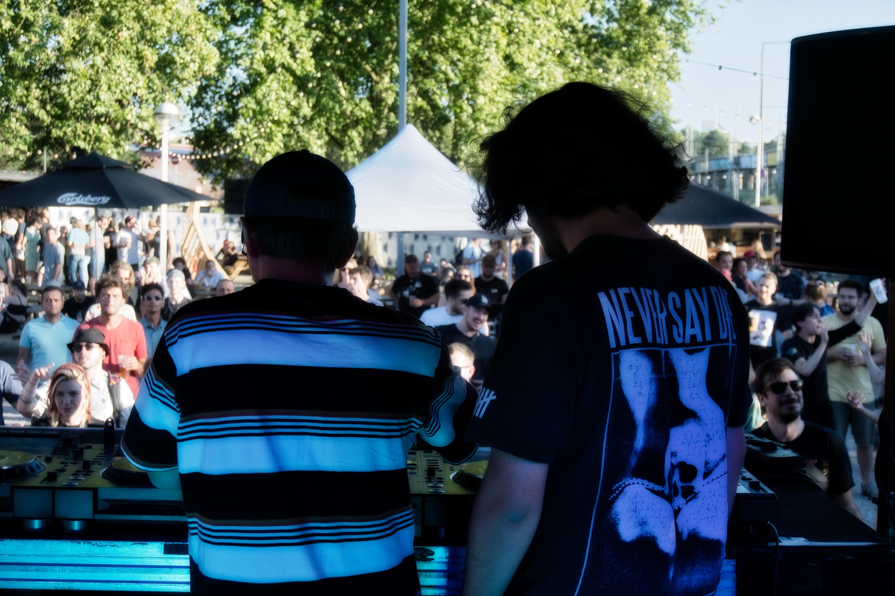

Concert / Lyon
The Sausages
Photographie de concert au Transbordeur, entre lumière mouvante, gestes rapides et énergie de scène.
Image live
Composer vite avec la lumière, le mouvement et les contraintes du concert.
Intention
Garder l'énergie du moment sans perdre la lisibilité de l'image.
Intention
Mouvement, lumière et tension live.
La série The Sausages travaille avec une lumière instable, des gestes rapides et un rythme de public impossible à rejouer. L'objectif est de garder l'énergie sans perdre la composition.
La page conserve la structure du portfolio mais laisse respirer la série avec des verts plus froids, des contrastes plus nerveux et des blocs d'images plus dynamiques.
Séquence visuelle

